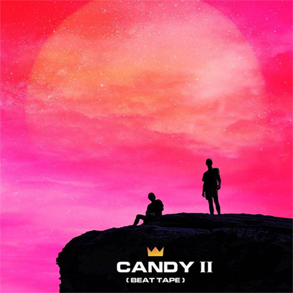
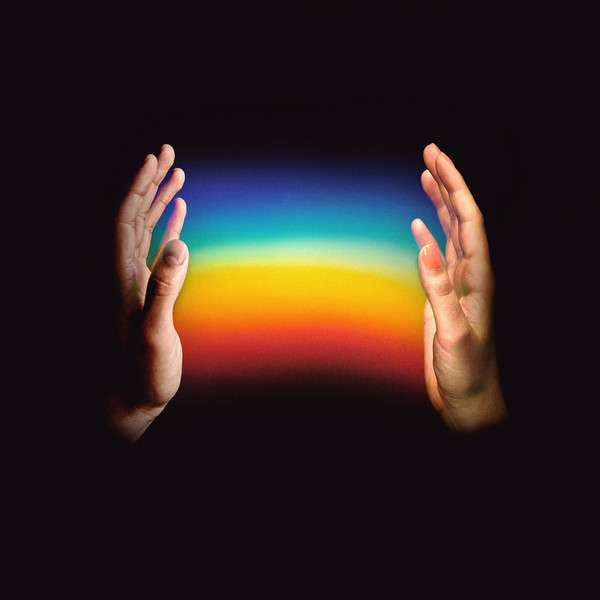
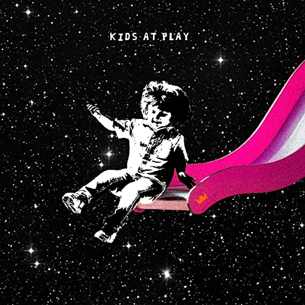

About
Louis the Child started playing at small venues through 2013 and 2014. In 2015, the band rose in popularity with the release of their single "It's Strange". Freddy Kennet was 17 at the time and still in high school. Robby Hauldren was beginning his freshman year at the University of Southern California.
The single garnered praise from artists such as Taylor Swift, who added "It's Strange" as one of her "Songs that Will Make Life Awesome" and was featured on the FIFA 16 soundtrack. "It’s Strange" was later featured in a commercial for the 2019 Nissan Kicks. They later opened for artists such as Madeon and The Chainsmokers. The duo embarked on their own tour on October 17, 2015, starting in Chicago.
Albums
In 2016, the duo joined forces with New Orleans rapper Pell as Pellican Child, releasing the single "Turn Me Down" from a proposed joint EP. That year, Louis the Child also released their Love Is Alive EP, a versatile set that featured the title track with guest vocalist Elohim and "Phone Died" with rapper Blaise Railey. Months later, they collaborated with Love Is Alive guest vocalist Ashe for another track, "Right to It." In 2018, the duo hit a milestone, teaming up with Aussie singer/songwriter Wafia for the gold-certified single "Better Not," their highest showing to date on the U.S. dance chart and their first chart hit in Australia. That track landed on their Kids at Play EP, which also featured Quinn XCII and NoMBe. Soon after, Louis the Child got to work on their first official full-length.
The life-affirming Here for Now arrived in 2020, loaded with U.S. Dance Top 30 hits "Free" with Drew Love, "Every Color" with Foster the People, and "Little Things" with Chelsea Cutler and Quinn XCII. The set also featured appearances by Atlanta rap duo EarthGang, returning collaborator K.Flay, and Bob Moses. A non-album track, "Somewhere Else" with BabyJake, arrived in February 2021.


